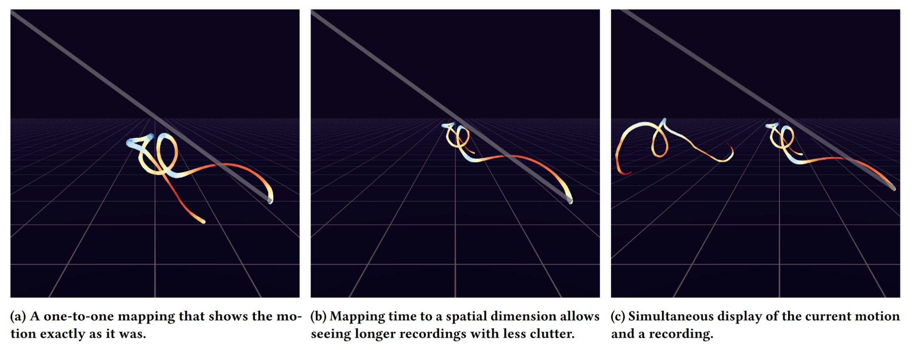

Immersive Visual Analysis of Cello Bow Movements


Venue. CHI IMI Workshop (2022)
Abstract. We propose a 3D immersive visualization environment for analyzing the right hand movements of a cello player. To achieve this, we track the position and orientation of the cello bow and record audio. As movements mostly occur in a shallow volume and the motion is therefore mostly two-dimensional, we use the third dimension to encode time. Our concept further explores various mappings from motion and audio data to spatial and other visual attributes. We work in close cooperation with a cellist and plan to evaluate our prototype through a user study with a group of cellists in the near future.
Acknowledgements. Funded by Deutsche Forschungsgemeinschaft (DFG, German Research Foundation) under Germany’s Excellence Strategy - EXC 2075 - 390740016, and by Cyber Valley (InstruData project).
Link to this page: